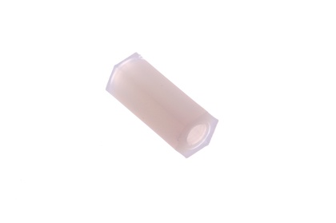
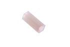
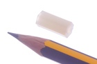
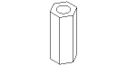

M3 x 12 mm Nylon Standoff (F-F) - NFF12

Summary
Name: M3 x 12 mm Nylon Standoff (F-F)
ID: NHFF-M3-X-12-01
Hex ID: NFF12
WebPage: https://github.com/oomlout/oomlout-OOMP/wiki/NHFF-M3-X-12-01
Short URL: http://oom.lt/NFF12
Revision History: https://github.com/oomlout/oomlout-OOMP/blob/master/parts/NHFF-M3-X-12-01/
| Type |
Size |
Color |
Description |
Index |
NHFF
Nylon Standoff (F-F) |
M3
M3 |
X
|
12
x 12 mm |
01
|
Images



About
This part is awaiting a description.
Specifications
| Info |
Value |
| Type |
Nylon Standoff (F-F) |
| Size |
M3 |
| Description |
x 12 mm |
Extra Details
Spotted a mistake, want to add more? Let us know oomp@oomlout.com
All images and resources are licensed [CC BY-SA] unless otherwise stated (ie. the datasheets)